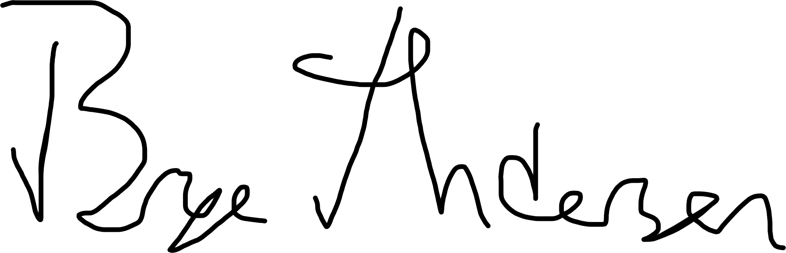

This is something I have always known I wanted to write but held off on in the hopes that I would be able to write a triumphant ending. That I have come to terms with all I am going to discuss, mitigated every negative effect on my life, calcified the part of my brain that wants to destroy itself, and took some deeply meaningful lesson away from my experience.
That would be bullshit. I am in a much better position than I was in high school or even a year ago, but in the grand scheme of having your shit together, I don’t. But with this said, I like to believe I am on an upward trajectory and that is enough. Today also happens to be my 20th birthday. Yes, twenty years ago to the day down the Hudson at NewYork-Presbyterian Hospital I came into existence. And with that at least on paper being an important milestone in my life, I figured this’d be a good excuse to post this. So here’s to one final 3.3k word verbose Brian essay-to-end-all-essays, one which you are welcome to read as much or as little of as you’d like.
If you’re reading this, you probably knew me in high school. This knowledge may range from vaguely knowing of me to being an incredibly close person to me. Your pre-existing knowledge of what I will allude to may be vast or non-existent. If this letter achieves what I intend with it, your knowledge of those finer details shouldn’t increase much if at all. I have done enough yelling those details into a bullhorn for one lifetime.
The basic summary is that I was abused. I am not going to give a blow-by-blow account of what happened, who did it, and when. My awareness and open discussion of this truth may have increased as I aged, but it wasn’t really until I started living on my own and with others that I truly began to understand the scope and abnormality of it. And when I finally began to reckon with these truths a little over a year ago, it absolutely ravaged me.
It would be fantastic if these people just woke up one day and decided, “You know what? For now on, I am going to be a completely irredeemable piece of shit.” It would be so much easier to handwave it all as irredeemably bad people being in my life. But as sappy as it sounds, these people do not get this way on their own. There is great complexity to all this, I am never going to forgive what happened to me yet for some reason I harbor deep feelings of love for those that did them to me. Some of them are no longer alive and their deaths greatly pained me. It is a great contradiction that some things I try to forget and some of my favorite memories involve the same people. As I get older sometimes I see flashes of my abusers in myself and my own relationships. There are no words to describe how much that terrifies me.
I was a deeply troubled teenager. I like to think I had some self-awareness but I endemically overestimated it. I was tremendously insecure about basically everything in my life. I carved out this bizarre space for myself lodged between these straight-edge AP/Model UN kids I felt I had zero similarities in background with and my more laid-back friends that I always felt I was a tertiary friend at best to.
I felt as if I was faking who I was. We segregate between the “good students” and the “bad students” at a young age and I fell solidly on the latter side of the equation. I graduated high school with a 2.2 GPA unweighted. I skipped class a lot and quite literally did not do the vast majority of homework assigned to me. I had to prove my self-worth to administrators to even get into those “better” classes. I was a year behind my peers in Math and Science and horrified that I would someday be “found out” as if I’d lose the respect of my “smarter” peers.
This is of course irrational. But at the time I viewed myself as l having cheated my way to the position I was in. I was undeserving of it despite what my teachers said. I conceived of myself as lazy. It wasn’t really until the past year talking through these issues in therapy that I realized: I never knew what I was going to come home to that night. I wasn’t always certain of where I’d be sleeping that night. So of course I was lethargic and unmotivated, I had a very precarious existence and while I think I understood I was depressed at some level I never made the connection.
I had a lot of self-immolative habits. Having had not much control over the trajectory of my life, I was obsessed with what little I could control. Namely my ability to control the rate of my own self-destruction. At my worst I would basically socially withdraw from well, everything. I would take large doses of over-the-counter or prescription drugs. I would stop eating. I’d stop going to class. I would otherwise inflict damage on myself. Part of my brain expected this to eventually kill me but having talked through it I think there was something more insidious to it than that. I was demonstrating to myself just how far I could drive myself to the brink. Even at the worst I felt on some level my background was far too privileged to truly go over the edge. I sort of took it all in like I was a tourist to my own misery.
I used to view the arc of my spirals as “everything is fine, then one day I try to take my own life. Then in a certain amount of time I feel better and wait for the next time it will happen.” It is ludicrous to say now but I was genuinely oblivious to the fact that these weren’t sporadic decisions, I was already far along the course of self-harm for each. It was always a silent monthslong process of autocannibalism, of which the most malicious part was that up until it did climax I would be incredibly good at hiding what I was feeling to everyone except those closest to me. I’d be more irritable or impulsive to those incredibly intimate with me, but otherwise not show much of what was to come there either. If in reading this you recognize in retrospect any of these signs in my past self, it is not your fault for not knowing.
My life has been defined by the fact I am my parents’ child. That my father was raised in a deeply twisted household that moved all over the country before landing in Queens and was nearly killed during the September 11th attacks. That my mother was born to a teenage single mom that had to raise three kids on her own in the city of Poughkeepsie, married several times to men who are now in prison, and works one of the most stressful and undervalued jobs in American society. She wanted to provide me the experience of childhood bedroom cradle-to-college stability that she never had. My father decided that life was not for him. Where I’ve lived has been solely dependent on who each were dating or married to at the moment and if we were speaking to each other at the time or not. This rotating cast of stepfathers and stepmothers have also shaped my life. It normalized the idea of people I love disappearing in an instant. It made me think that kind of thing was inevitable. More than anything else, I think that abandonment was my deepest held terror.
I have always viewed myself as a pretty emotionally formidable person. I always genuinely believed that the solution to my problems was simply to establish as much financial independence as possible and move far away, which is exactly what I did. I have lived on my own since before I even graduated high school. Distance and time has helped, but to reckon with the fact that these feelings would not simply go away once I was on my own and physically safe brought me to my knees.
It did not help that where I went was this ritzy 7% acceptance rate university. I still have no clue how the hell I got in here. I genuinely did not have any expectation of going to college. My parents always wanted me to and my sister did, but I was the fuck up, the ne’er-do-well smartass that could talk the talk but not walk the walk. It wasn’t until a few teachers basically grabbed me by the shoulders shaking me and yelling “YOU’RE SMART” that I really considered the idea. But what the hell was I to do? My grades were garbage, I had some extracurricular stuff I suppose was interesting but I had a really thin profile.
Part of me is very proud of what I did and part of me is ashamed that I took a slot from someone who “worked harder.” But for whatever reason I decided I was actually gonna put effort into this process. With Arlington’s guidance department MIA and no parental support I poured so much time into learning how the process worked. Most of the advice I saw was not applicable to people like me. I knew I was at a deep disadvantage on the basis of my grades.
So I drafted an essay talking about why I made this leap. I presented my life as honestly as I could without making it the focus or resorting to the absentminded trauma-dumping or resentment I have often posted. It was just about a chance encounter with a teacher from years ago who was the first one to truly tell me that he saw through it. That I was capable of something more than what my grades showed. That we don’t all start from the same place. And I edited it for months until I knew it was good. I knew I needed more than just words though, and I drove hours into Connecticut to sit for the SAT.
When I got my score I cried. And then I laughed. I knew how many doors this opened up for me. And then I realized I was probably one of the only person to ever cry tears of joy about how they did on that test. So I loaded a shotgun with 22 applications and shot it at a barn door. For some reason almost all of them took a chance on me. I expected maybe two of the 22 to accept me, none except Cornell outright rejected me before I committed to Northeastern.
Two years later I currently live in “International Village,” a 22-floor luxury high-rise apartment building overlooking majority-black Roxbury with a dining hall, classrooms, a gym, and amazing views of the Massachusetts Bay, Fenway Park, the Boston skyline, and countless other things. Immediately preceding this, I lived on an air mattress in the basement apartment of 139 Rombout Ave in Beacon, a boarding school-turned hat factory-turned smoldering mess-turned apartment building. It has been one hell of a transition to say the least.
When growing up, I always knew people who had it worse than me, be it in terms of economic status or family situation or any other way. That’s not really the case here. It is bizarre because I have always considered my life pretty privileged in a lot of ways. People with shit lives tend not to grow up in an Upper East Side Manhattan brownstone. But it is a rare day when I meet someone here who did not grow up extremely wealthy, or with two parents, or in the same house, or didn’t go to some fancy prep school. So when my friends talk about their problems there is a deeply unempathetic part of my brain that screams that I would have done anything to have their life, and I hate that about myself.
But with that said, I have discovered my initial reading of many people to be shallow. My parents both had graduate degrees and certainly put pressure on me to perform academically, but they eventually threw in the towel. I have met many people here who had drill sergeants for parents, who demanded the very best of their children in academics, music, or sports. Who not only parented through pure terror, but where the dynamic of the relationship didn’t progress to being less micromanaging as they aged. And yes maybe their kids got good grades or whatever, but I watch them come here to what they were allegedly working towards and fucking implode the second they get an ounce of independence be it through drugs, sex, acting out, mental health, etc.
I am in many ways grateful that I got to make many of the mistakes of being generally irresponsible and risky in middle & high school. There are guardrails at that age that prevent you from completely destroying your life. I am also glad I was never held on a pedestal as particularly talented or intelligent or successful by my parents. What I describe is very different from how I was abused, but just as detrimental and I’d argue more malicious. It is not a difference of culture, or of strict parents, it is an issue of being mistreated by those who are supposed to be your greatest advocates. It is also something I suspect some people reading this are going through.
When you don’t have coherent mechanisms to cope, you develop your own. For me this manifested as a combination of shouting my trauma into the world, self-deprecating humor, self-harm, and drugs. This was obviously tremendously unhealthy and in retrospect I believe I have scared the shit out of many of you on numerous occasions. If there is a central paragraph of this letter, it is this next one.
I am sorry. For all that I have talked about, I am the only person responsible for my actions. There were moments where I lashed out at people, or got in physical/verbal fights, or appeared to be about to do something drastic and put many people in a very bad spot. I have been a condescending, unempathetic asshole more times than I can list. There were a lot of moments where I was a dogshit friend, a dogshit boyfriend, a dogshit person in general. There are so many events where I wish I could have made different decisions, or comforted people, or just showed an ounce of humanity I otherwise completely lacked except when talking about myself. Some of those moments keep me up at night. I know me saying that probably doesn’t help. I don’t ask for forgiveness or pity. I don’t ask for reassurance that my worst isn’t how you remember me. All I ask is that you have faith that what I say is what I mean, even if unacceptable to you.
I’ve sought help and I’m receiving it. It’s funny, I genuinely had issues even constructing a coherent narrative of who I am and what my story is before I did. For people that were concerned for me, I’m in a far better place. I hope you are too. High school is not exactly where we expect people to be at their best. And I want you to know that I harbor no ill will towards you or anyone else. That wasn’t always the case but I have been able to let go of so many things by acknowledging I needed help along the way. I hope you’re able to acknowledge that too if you haven’t already.
It’s bizarre too, for as dysfunctional as my early life was I cannot imagine myself without it. I’ve lived all over New York and California, including a few blocks from the Pacific Ocean in Los Angeles and in Midtown Manhattan. I’ve experienced apartments and houses and for as traumatic as going from a large home to a small cramped apartment is, it has made adjusting to life in Boston much easier. I like to think that my experiences good and bad have taught me some lessons and given a certain amount of depth to my understanding of the world that is simply not present in the lives of some of those around me. This is the second great contradiction of it all, for as horrible as I feel at times I am grateful that I got to have such a varied childhood. It was formative to my political and social development and has given me a breadth of knowledge of issues I’d otherwise not have thought about. I am at peace with what shaped me.
I live in Boston now. When I say that I mean it, I have a lease here, I vote here, I have a driver’s license here, my entire family has left New York, and I expect to start a full-time software development job here in July as is typical of Northeastern’s co-op program. I’ll probably stay here after college. I’m still not as good a student as I want to be but I’m treading water. I no longer use any drugs or alcohol. My relationships are stable and long-lasting. I’ve been a bike courier for a little over a year. I deliver UberEats, DoorDash, goPuff, etc on a bicycle around Boston. It’s a tough job that’s taken a bit of a physical toll on me but it pays my bills and humbles me a bit. I try to channel much of what I feel into what I believe is good, I do a lot of work with the Massachusetts Democrats and Boston DSA. I've made a lot of friends through these organizations and I’m starting to orient myself around housing policy. I remember some of the places I lived as a kid with exposed wires, no heated water, rats, and I hope to die in a country where no child has to grow up like that. I make no secret of my ambition and I will soon cash that check and see where it takes me. I hope you allow what you’ve experienced to fuel you in a healthy way too.
I still have a lot to work through. It pains me to say I am not in a place to rekindle old friendships or visit quite yet, but I am getting there. I also am going to delete my Instagram account in a few days, it has been deactivated for over a year but is a painful reminder of a really bad time for me. But I have come so far and it feels so good to be at peace with so much that I thought would bury me. It feels unfathomable to know that even if I’m still a deeply flawed person, I’ve made it further than my wildest expectations. If you need to contact me, my email is on this site and I have an active Twitter account.
What I talk about here is not unique to me. I know many of you were abused. For some of you, it may be ongoing. I want you to know that you are going to make it out of there. You are going to reach a point where you understand how it shaped you. You are going to find peace in your own way. And while you may never forgive or forget it, you will not let yourself be a conduit for the same evils that were inflicted upon you.
